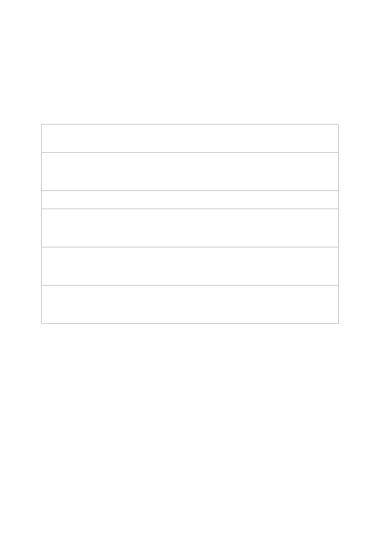

Fine Tunes
Reference
Service: Cognitive Services
API Version: 2022-12-01
Cancels the processing of the fine-tune job specified by the
given fine-tune-id.
Creates a job that fine-tunes a specified model from a given
training file. Response includes details of the enqueued job
including job status and hyper paramete...
Deletes the fine-tune job specified by the given fine-tune-id.
Gets details for a single fine-tune job specified by the given fine-
tune-id. The details contain the base model, training and
validation files, hyper parameters,...
Gets the events for the fine-tune job specified by the given fine-
tune-id. Events are created when the job status changes, e.g.
running or complete, and when res...
Gets a list of all fine-tune jobs owned by the Azure OpenAI
resource. The details that are returned for each fine-tune job
contain besides its identifier the base...
Operations